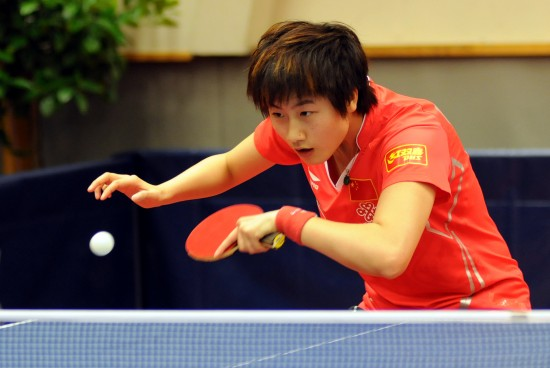
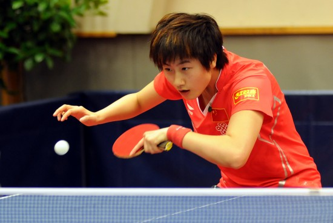

乒乓球
 

乒乓球
乒乓球（ping-pong），中国国球，是一种世界流行的球类体育项目。兵乓球起源于英国，"乒乓球"一名起源自1900年，因其打击时发出"Ping Pong"的声音而得名，在中国大陆以"乒乓球"作为它的官方名称，香港及澳门等地区亦同。乒乓球为圆球状，重2.53-2.70克，白或黄色，用赛璐珞或塑料制成，2000年悉尼奥运会之前国际比赛用球的直径为38mm，2000年之后国际比赛用球的直径为40mm。运动员各站球台一侧，在中间隔有横网的长274厘米、宽152厘米、高76厘米的球台上进行，用球拍击球（击法有挡、抽、削、搓、拉等），球须在台上反弹后才能还击过网，以落在对方台面上为有效。比赛分团体、单打、双打等数种；以11分为一局，采用五局三胜，七局四胜。
握拍方法
直拍
（1）快攻型握拍法。拍前食指第二指节和拇指第一节在拍的前面呈钳型，两指间在距离1～2cm，拍柄贴住虎口，另外三指自然弯曲贴于球拍后的1/3上端。
（2）弧圈型握拍法。弧圈型握拍法与快攻型握拍法基本相同，其区别是：拇指和食指形成一个小环状，其他三指在拍背面自然重叠，由中指的第一指关节顶于拍柄的延长线上。
横拍
横拍握拍法如同握手一样。中指、无名指、小指自然弯曲握住拍柄，大拇指在球拍正面靠近中指，食指自然伸直，斜放于球拍背面。正手攻球时，食指稍向上移动，反手攻球时，拇指稍向上移动。
技巧学习
攻球从大的动作结构来讲，可分为正手和反手攻球两大类。攻球是快速进攻最重要的一项技术，杀伤力强，是解决战斗的关键技术。
(一)动作要点(以右手为例)
1. 正手攻球：近台中偏
右站位左脚稍前，身体斜对球台，持拍手自然放松置于腹前，拍半横状。顺来球路线略向右侧引拍，约与台面齐高，拍面与台面约成80度左右，前臂与台面基本平
行。当球从台上弹起，持拍手由右侧向左前上方挥动，以前臂快速内收发力配合手腕内转沿球体做弧线挥动，在上升期击球的中上部，击球位置在身体右前方一前臂
距离处。
2.
反手攻球：站位近台右脚稍前，持拍手自然弯曲置于腹前偏左，重心偏于左脚。顺来球线路向后引拍。当球从台上弹起，持拍手由左后向右前上加速挥拍，前臂发力
为主，手腕外转，拍面前倾，重心移至右脚，左右 胸前击球上升时期的中上部。 攻球的重点难点是挥拍发力和正确恰当的击球点。
比赛赛制
比赛以11分为一局（曾经长期实行21分制，最早甚至出现过100分制）采用五局三胜（团体）或七局四胜制（单项）。比赛分团体、单项（男单、女单，男双、女双、混双）。
比赛类型
1、"国际赛"
2、"国际比赛"
3、"公开赛"
4、"限制赛"
5、"邀请赛"
场馆标准
奥运会乒乓球比赛在体育馆内进行，馆内的具体标准为：
比赛区域
包括可容纳4张或8张球台（视竞赛方法而定）的标准尺寸（8米宽、16米长、天花板高度不得低于4米）的正式比赛场地、比赛区域还应包括比赛球台旁的通道、电子显示器、运动员、教练员座席、竞赛官员区域（技术代表、裁判长、仲裁等）、摄影记者区域 、电视摄像区域以及颁奖区域等所需要的面积。
灯光
奥运会为了保证电视转播影像清晰，要求照明度为1500～2500勒克斯，
所有球台的照明度是一样的。如果因电视转播等原因需要增加临时光源，该光源从天花板上方照下来的角度应大于75度。比赛区域其它地方的照明度不得低于比赛
台面照明度的1/2，光源距离地面不得少于5米。
场地四周一般应为深颜色，观众席上的照明度应明显低于比赛区域的照明度，要避免耀眼光源和未遮蔽的窗户的自然光。地面地面应为木制或经国际乒联批准的品牌和种类的可移动塑胶地板。地板具有弹性，没有其它体育项目的标线和标识。地板的颜色不能太浅或反光强烈，可为红色或深红色；不能过量使用油或蜡，以避免打滑。
专业术语
比赛台面
（一）左、右半区又称1/2区，其方向对击球者本身而言。
（二）近网区指距球网40厘米以内的区域
（三）底线区指距端线30厘米以内的区域
（四）中区指介于近网区和底线区之间的区域
（五）边区指靠近球桌边缘的区域